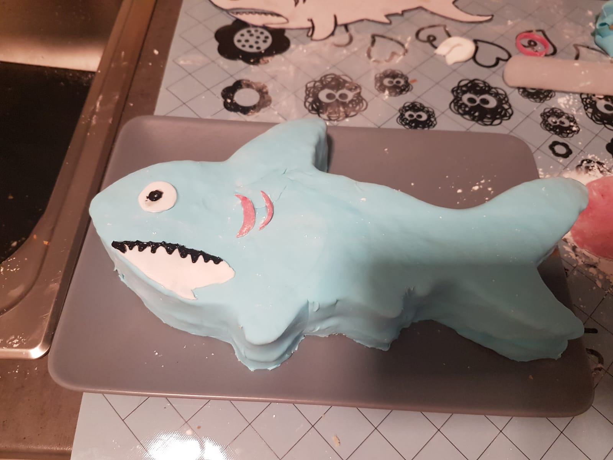

zurück
Hai
Zubereitungszeit: 110min

- Zwei halbausgezogen Backbleche mit Fantakuchen in Zitronenversion backen
- 30min auskühlen lassen
- Zwei Haie mit Hilfe der Schablone ausschneiden
- Sahnecreme herstellen
- Sahnecreme auf einen Kuchenboden spritzn
- 30min in den Tiefkühler stellen (oder über Nacht in den Kühlschrank)
- Mit Fondant eindecken, wie bei der Hai-Deko beschrieben